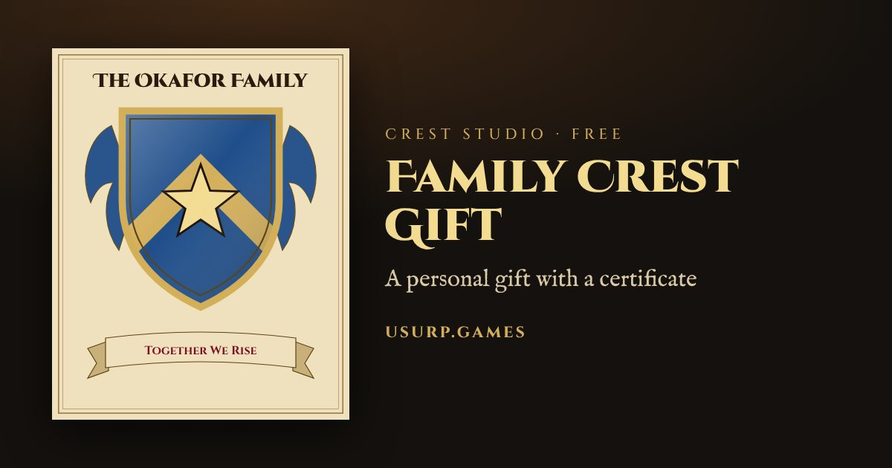
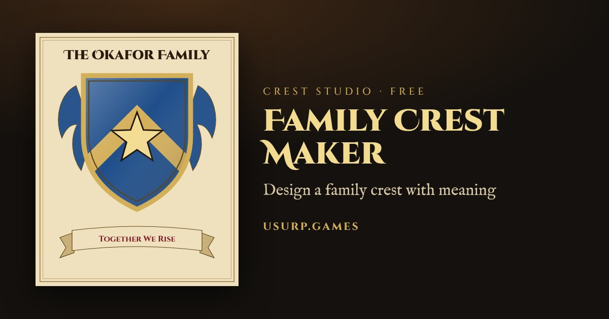
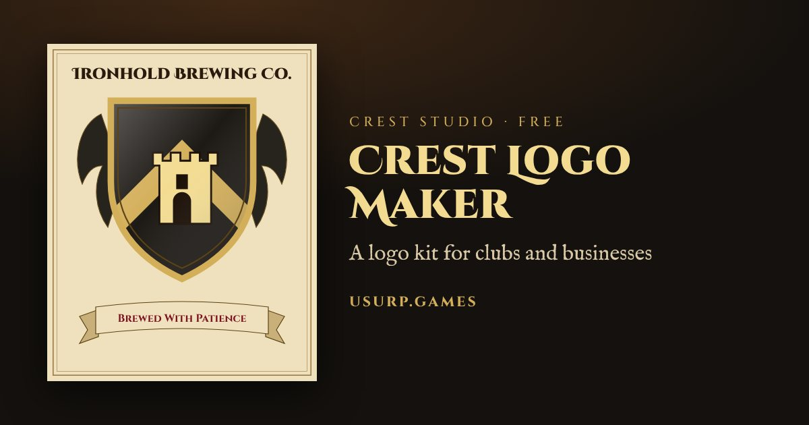
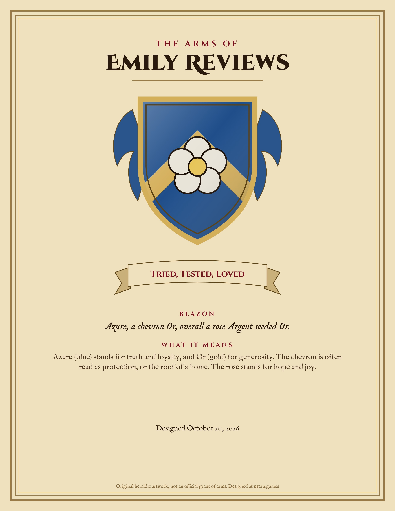

Press kit
Crest Studio
Crest Studio is a free online coat of arms designer. Anyone can design a family crest in a couple of minutes (name, colors, division, emblem, motto) and buy the finished files instantly.
- set: print-ready art (4000 px PNG, web PNG, SVG vector), a printable certificate of arms that explains the design in heraldic language and plain English, with an optional "presented to" gift line, a 1080 px profile picture and a phone wallpaper.
- 9 Crest Logo Kit: everything above plus transparent logo files, favicons and app icons, social banners and a brand sheet, for clubs, teams and small businesses.
- Free to design and preview, no account needed. Instant download. Refundable within 14 days. Prices in USD, shown in local currency at checkout where available.
- Good for: holiday and birthday gifts for parents and grandparents, weddings and anniversaries, new homes, family reunions, D&D and worldbuilding, school house systems.
- Honest note: designs are original decorative artwork in the style of heraldry, not historical or official family arms.
- Made by Prakhar Murary (Murary Studios), Jaipur, India. Contact: hello@usurp.games. Site: usurp.games/crest.
Images
Free to use in coverage. Click to download.








Crest Studio by Usurp · Operated by Prakhar Murary (Murary Studios), Jaipur, Rajasthan, India · hello@usurp.games